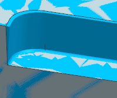
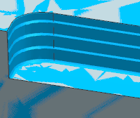

Floor and Wall milling cut region containment
When you create Floor and Wall and Floor and Wall with IPW operations, you can use two options to limit the resulting cut region.
-
The Floors option projects all cut levels along the tool axis and limits the cut region to the floors.
-
The Walls option limits the cut region to the specified floor or walls. As the cut levels follow the tapered walls to change the cut region from the top of the wall to the bottom of the wall, this option efficiently machines the tapered walls.
The examples illustrate the result of using these options with 4 cut levels.
|
 |
|
 |
|
Cut Region Containment = Floors |
|
Cut Region Containment = Walls |
Where do I find it?
|
Application |
Manufacturing |
|
Location in dialog box |
Floor Wall dialog box or Floor Wall IPW dialog box →Path Settings group or Floor Wall dialog box or Floor Wall IPW dialog box→Path Settings group→Cutting Parameters |